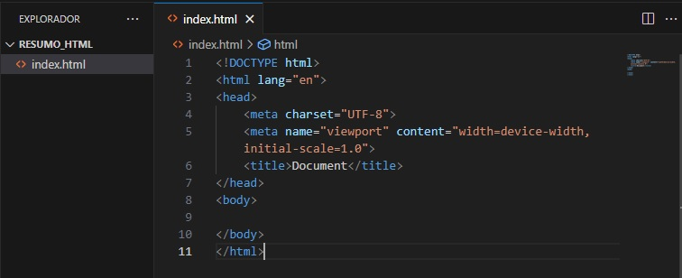

Para criar um site, precisamos de um arquivo com a extensão .html. Usualmente, o arquivo principal, ou seja, a origem do site, leva o título de index.html.
Após a criação do arquivo index.html, basta digitar um sinal de exclamação (!), que resultará em:
Em seguida, devemos alterar o idioma padrão de "en" para "pt-br". No "title", escolheremos o título da página (que consta na aba do navegador).
No head, além das mudanças mencionadas, podemos inserir um ícone para acompanhar o título na aba do navegador. Para tanto, devemos utilizar:
- link rel="shortcut icon" href="favicon.ico" type="image/x-icon" -
Importante lembrar que o ícone, por padrão, deve receber o nome favicon.ico.
VOLTAR